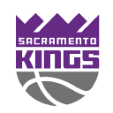

SearchHomeLiveNBAMoviesSeriesSaved
Games GrizzliesStandingsLeadersTeam statsNews
GrizzliesStandingsLeadersTeam statsNews
Your team2026-27Regular season
Memphis
Grizzlies
3-0
1 result hidden
Mon, at Jazz
NextThu night 02:00 at Trail Blazers
at Trail Blazers
NBA League Pass
Watch from tip-offGame pageMon 26 Oct · late
Replay on NBA League Pass 4
Replay on NBA League Pass 4
Schedule3 seen1 hidden replay◀ results▶ coming up
Fri 23 Oct · late
W111–108
Sun 25 Oct · late

at KingsW123–112
Mon 26 Oct · late
at Jazz
Result hidden
NextThu 29 · late
02:00League Pass
Sat 31 Oct
vs Kings
00:00League Pass
Season ranksNewsRoster